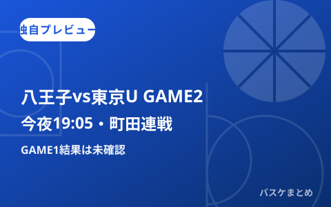

八王子vs東京U、町田連戦は今夜19:05にGAME2 前日GAME1は結果未確認で臨む独自プレビュー

2026年10月23日（金）は、B.ONE第6節・東京八王子ビートレインズ対東京ユナイテッドバスケットボールクラブの2連戦のうちGAME2が、町田市立総合体育館で19時05分に予定されています。前日10/22のGAME1は当サイトも開催を独自プレビューしましたが、本稿作成時点では結果を確認できていません。本記事はGAME1の結果が未確認であることを前提に、2連戦2戦目という文脈から見どころを当サイト独自に分析します。
GAME1（10/22）の結果は本日時点でも未確認
当サイトは前日10/22の記事で、東京八王子ビートレインズのクラブ公式サイト（trains.co.jp）を根拠に、同クラブと東京ユナイテッドバスケットボールクラブの対戦がB.ONE第6節として10/22・10/23の2日間、いずれも19時05分TIP OFF・会場は町田市立総合体育館（主催八王子）で行われると確認していました。本日あらためてtrains.co.jpおよびbleague.jpへの接続を試みましたが、いずれも接続できず、GAME1（10/22開催分）の結果を一次情報源から再確認することはできませんでした。
Web検索では、共同通信配信とみられる「八王子が東京Uに78-75で競り勝ち」という記述を含む記事スニペットが一件見つかりましたが、そこでは大会表記が「りそなBリーグ（2部）」となっており、当サイトが確認している今季の表記（B.ONE）と一致しません。別シーズンまたは別の大会を指す記事である可能性が高いと判断し、本記事ではこの記述をGAME1の結果として採用せず、未確認として扱います。
【独自分析】2連戦2戦目という文脈で見るGAME2の注目点
同一会場・同一カードを連日で行う2連戦（いわゆるバックトゥバック）は、1戦目の試合展開を踏まえてベンチが先発や守備の組み立てを修正しやすいという特徴が一般的にあります。GAME1の結果が未確認である以上、具体的にどちらのクラブがどのような修正を行うかを断定することはできませんが、連戦2戦目では「1戦目に劣勢だった側が外国籍選手の起用法やディフェンスの的を絞って試合入りする」傾向がしばしば見られる点は、バスケットボールの一般的な傾向として指摘できます。これは確認済みの事実ではなく、当サイト独自の分析的な見立てである点をあらためて明記します。
なお、両クラブの現時点の順位・直近の勝敗数についても、本日時点でbleague.jp・各クラブ公式サイトのいずれにも接続できず確認できていません。順位を前提とした具体的な勝敗予測は、確認できる情報が揃うまで見送ります。
前日4試合の確認状況まとめ（取得時刻・対象データ日）
| カード | 対象データ日 | 確認時刻 | 状態 |
|---|---|---|---|
| 仙台vs横浜BC（19:05開始） | 2026.10.22分 | 2026-10-23 05:40頃／08:07頃JST（本日のWeb検索・2回） | 結果未確認（公式サイト接続不可、検索でもスコア未発見。08:07の再検索でも変化なし） |
| A東京vs茨城（19:05開始） | 2026.10.22分 | 2026-10-23 05:40頃／08:07頃JST（本日のWeb検索・2回） | 結果未確認（公式サイト接続不可、検索でもスコア未発見。08:07の再検索でも変化なし） |
| 八王子vs東京U GAME1（19:05開始） | 2026.10.22分 | 2026-10-23 05:40頃／08:07頃JST（本日のWeb検索・2回） | 結果未確認（検索で類似記述を発見したが大会表記の不一致により不採用。08:07の再検索でも新しいスコア情報は発見できず） |
| 湘南vs山口（開催日表記に食い違いあり） | 2026.10.22分 | 2026-10-23 05:40頃／08:07頃JST（本日のWeb検索・2回） | 結果未確認。前日記事で指摘した開催日の食い違い（22日説・23日説）も本日08:07時点で未解消 |
| 八王子vs東京U GAME2の日程（19:05・町田市立総合体育館） | 2026.10.23分 | 2026-10-22 08:10頃JST（クラブ公式サイトで確認） | 前日確認済み。本日05:40・08:07ともtrains.co.jp接続不可のため再確認できておらず、前日確認内容を維持 |
| 両クラブの現在の順位・成績、公式インジュアリーリスト | ― | ― | 本日も未確認（08:07時点も公式サイト接続不可） |
【追記・08:07再確認】検索エンジンの要約に別日程の記述、ただし一次情報で未確認のため不採用
本日08:07頃に改めてWeb検索で裏取りを行ったところ、検索エンジンの要約文の中に、日程掲載サイト「スポカレ」掲載分として「東京ユナイテッドバスケットボールクラブ対東京八王子ビートレインズ、2026.12.07・時間未定・会場：中央区立総合スポーツセンター」という記述が含まれていました。ただし当該サイト（spocale.com）には本日08:07時点でも接続できず、どのページのいつ時点の情報かを一次情報として確認することはできませんでした。本記事が扱う10/22・10/23の町田連戦とは日付・会場とも異なる記述であり、更新前の古い日程表記である可能性が高いと判断し、今夜19:05開始のGAME2の予定を変更する根拠としては採用していません。一次情報で裏取りできていない検索要約のみの情報である点を明記したうえで、今後の確認のために記録します。
出典：B.LEAGUE公式（試合詳細・インジュアリーリスト、本日は接続不可のためURLのみ記載）／東京八王子ビートレインズ クラブ公式サイト（前日確認分）／チケット販売・日程掲載サイト（ticketjam、スポカレ）
https://www.bleague.jp/game_detail/?ScheduleKey=506495&tab=1
https://www.bleague.jp/game_detail/?ScheduleKey=506496&tab=1
https://www.bleague.jp/game_detail/?ScheduleKey=507273&tab=1
https://www.bleague.jp/game_detail/?ScheduleKey=507923&tab=1
https://www.bleague.jp/news/injury.html
https://trains.co.jp/news/2026-27/6_TUBC
https://ticketjam.jp/ticket/sports/10192885
https://spocale.com/sports/5/game/349585